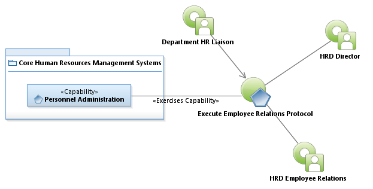
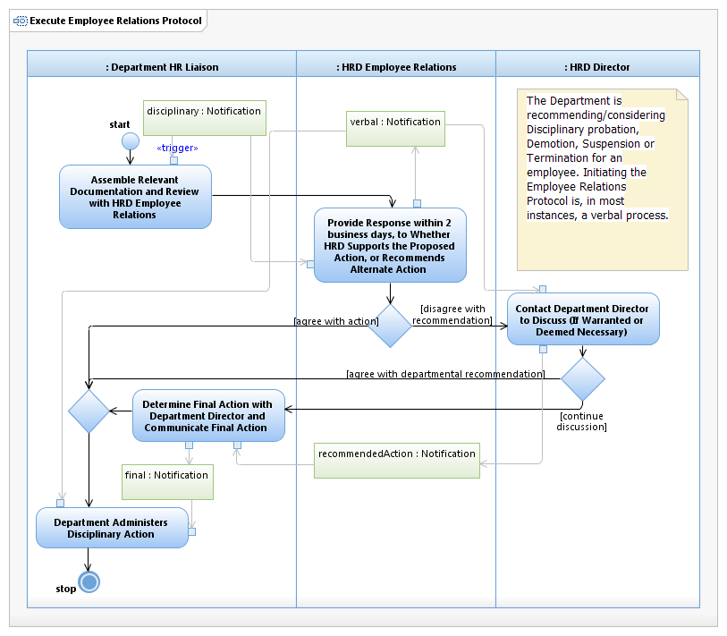

Use Case Model: Execute Employee Relations Protocol
Architect: Aaron Brown, Enterprise IT Architect Senior
Date Last Modified: 2/20/2013
User Review: Jeff Burton, Employee Relations Manager
Date: 2/20/2013
Department human resources managers or their representatives are required to review potentially grievable personnel actions involving disciplinary probation, demotion, suspension, or termination with corporate HRD Employee relations division prior to administering discipline to the employee.
Follow link to Role Definitions

Use Case Model: Execute Employee Relations Protocol

Activity Model:
Execute Employee Relations Protocol